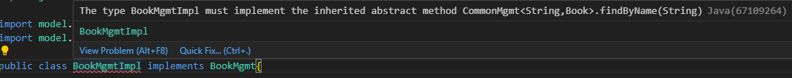

An example
Let's say we're developing a Library management. We have 2 interfaces, 1 to manage books, and 1 to manage authors, as below:
public interface BookMgmt {
List<Book> findAll();
Book findById(String id);
boolean addNew(Book newBook);
boolean update(String id, Book newBook);
boolean deleteById(String id);
List<Book> findByAuthor(Author author);
}
public interface AuthorMgmt {
List<Author> findAll();
Author findById(int id);
boolean addNew(Author newAuthor);
boolean update(int id, Author newAuthor);
boolean deleteById(int id);
}We can see that, there are many common methods in the above interfaces. The only differences are the return type and the param type. So is there any way for us to remove the duplicates, but keep the same features?
Yes. It's Generic.
Generic interface
First, we create a common interface, just like the one below:
public interface CommonMgmt <ID, E> {
List<E> findAll();
E findById(ID id);
boolean addNew(E newEntity);
boolean update(ID id, E newEntity);
boolean deleteById(ID id);
}There are 2 differences between AuthorMgmt and BookMgmt, they are ID type and return type (Entity type), so we declare 2 generic types (ID stands for id and E stands for entity). The generic types are declared beside the interface name for all the methods inside to use them. All of the common methods are now declared.
Next, we use the BookMgmt and AuthorMgmt interfaces to extend the CommonMgmt interface and replace the Generic types with the data types they would use.
public interface BookMgmt extends CommonMgmt<String, Book>{
List<Book> findByAuthor(Author author);
}
public interface AuthorMgmt extends CommonMgmt<Integer, Author> {
}Because generics accept only object data types, not primitive types, we must change any primitive types to the object types, such as int -> Integer, long -> Long, and so on.
Now, when we create any implementation class of the above interfaces, that class must override all the common methods that we declared in the common interface.
Implementation class
Besides reducing method declarations, generic can also help you to manage your code better.
Update generic methods
Let's say you want to add a similar method to many interfaces. With the generic interface, you will have to declare that method in ONLY 1 interface, and any implementation classes would have to declare it.
Now we add a new findByName method to the common interface.
public interface CommonMgmt <ID, E> {
List<E> findAll();
List<E> findByName(String name);
E findById(ID id);
boolean addNew(E newEntity);
boolean update(ID id, E newEntity);
boolean deleteById(ID id);
}Without any change in the BookMgmt interface, we can see that the BookMgmtImpl class must now override the new method.
Book Management implementation class